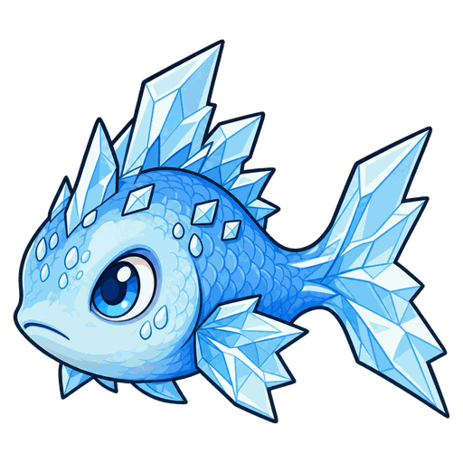
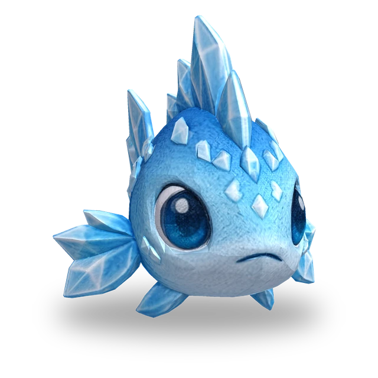
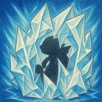
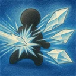

레벨이 오를 때마다 체력·공격력·기술력이 15%씩 커집니다(최대 Lv.11).
No.018
현재 대상에게 마법 피해를 주고 결빙시키며, 기본 공격이 대상 뒤의 적에게도 퍼집니다.
프리즘랜스(으)로 진화

액티브
2칸 이내의 현재 대상에게 기술력의 300%만큼 마법 피해를 주고 1.5초간 결빙시킵니다. 결빙된 적은 행동과 마나 획득이 멈춥니다.

패시브
기본 공격이 대상 뒤로 퍼져, 대상에게서 1칸 이내에 있고 자신에게서 대상보다 먼 적에게도 그 피해의 50%를 줍니다.